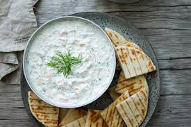
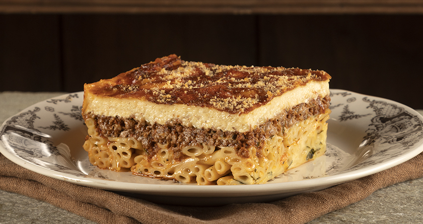

I absolutely love traditional Greek cuisine. Here are some of my favourites:
- Souvlaki
- Tzatziki
- Pastitsio



Learn more about Greek cuisine on Wikipedia.
I absolutely love traditional Greek cuisine. Here are some of my favourites:
Learn more about Greek cuisine on Wikipedia.